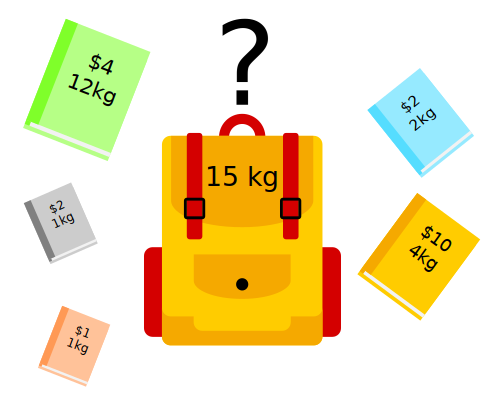

Assessing Human Interpretability of Machine-Generated Solutions to Combinatorial Design Problems
D. Pegler, D. Steyrl, F. Scharnowski, & F. Melinscak
Problem Setting
Machine Problem-Solving
- Increasingly taking over human domains
- Recent years: GenAI → black boxes → lack of trust
- Trust issues not new (Classical AI in 1950s)
Interpretability
- Human-in-the-loop approach to evaluate human interpretability
- Important for trust and improving colaboration with machines
Figure 1: George Dantzig, father of linear programming (Source: malevus.com).
Combinatorial Problem Solving

Figure 2: Knapsack Problem (source: wikimedia commons).
{kind=link}
Figure 3: Traveling Salesman Problem (source: wikimedia commons).
{kind=link}

Figure 4: Minimum Spanning Tree Problem (source: wikimedia commons).
{kind=link}
- Widespread (logistics, etc)
- Can be solved by machines optimally
- Can be solved by humans (if small enough)
→ Good setting for human-machine collaboration
Use References
References
Dumnić, S., Dupljanin, D., Božović, V., & Ćulibrk, D. (2019). PathGame: Crowdsourcing time-constrained human solutions for the travelling salesperson problem. Computational Intelligence and Neuroscience, 2019, 1–9. https://doi.org/10.1155/2019/2351591
Franco, J. P., Doroc, K., Yadav, N., Bossaerts, P., & Murawski, C. (2022). Task-independent metrics of computational hardness predict human cognitive performance. Scientific Reports, 12(1, 1), 12914. https://doi.org/10.1038/s41598-022-16565-w
Lage, I., Ross, A., Gershman, S. J., Kim, B., & Doshi-Velez, F. (2018). Human-in-the-loop interpretability prior. Advances in Neural Information Processing Systems, 31, 10180–10189. https://proceedings.neurips.cc/paper_files/paper/2018/hash/0a7d83f084ec258aefd128569dda03d7-Abstract.html
MacGregor, J. N., & Chu, Y. (2011). Human performance on the traveling salesman and related problems: A review. The Journal of Problem Solving, 3(2). https://doi.org/10.7771/1932-6246.1090
Murawski, C., & Bossaerts, P. (2016). How humans solve complex problems: The case of the knapsack problem. Scientific Reports, 6(1, 1), 34851. https://doi.org/10.1038/srep34851
Ott, C., & Jäkel, F. (2023). SimplifEx: Simplifying and explaining linear programs. https://osf.io/v4xmc/
Wynn, A., Sucholutsky, I., & Griffiths, T. L. (2023, December 21). Learning Human-like Representations to Enable Learning Human Values. https://doi.org/10.48550/arXiv.2312.14106